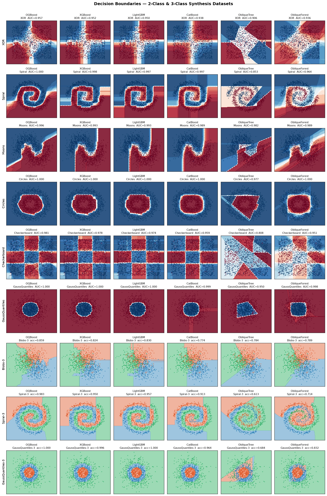
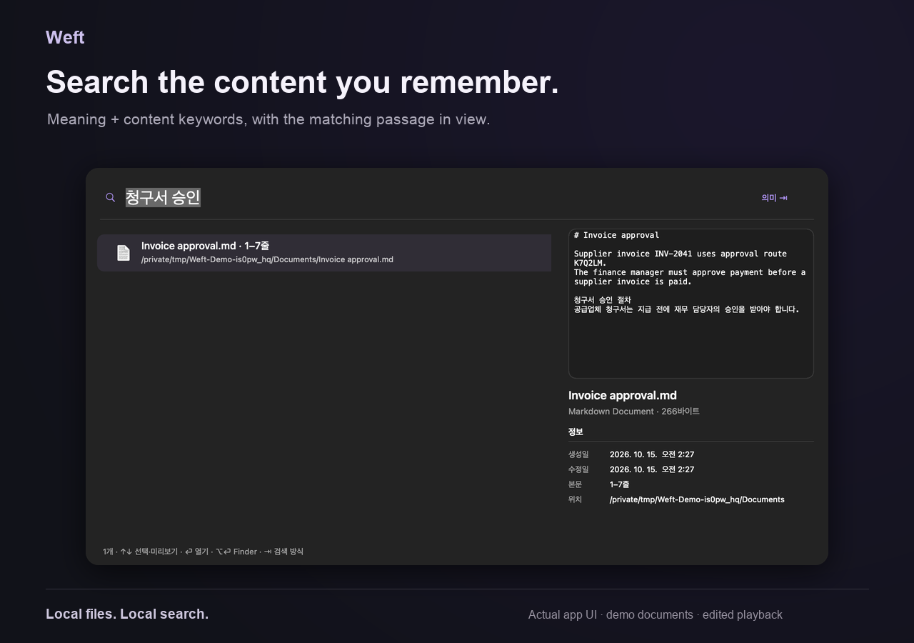

OQBoost 2.0
머신러닝두 특성의 선형 결합으로 데이터를 나누는 그래디언트 부스팅 라이브러리입니다. C++ 엔진과 scikit-learn 호환 API를 제공합니다.


GitHub 고정 프로젝트
두 특성의 선형 결합으로 데이터를 나누는 그래디언트 부스팅 라이브러리입니다. C++ 엔진과 scikit-learn 호환 API를 제공합니다.


학회 발표와 공개 모델
KrAIS Summer Workshop · Session 6
공개 모델